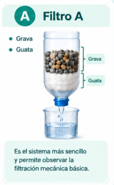
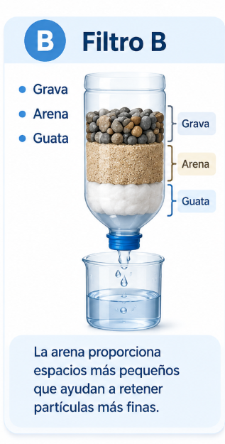
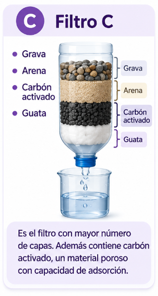

🧪 Nuestros filtros
Construimos tres sistemas diferentes para poder compararlos.


🔎 ¿Qué queremos comparar?
Los tres filtros recibirán la misma cantidad de agua turbia. Compararemos la apariencia del agua después de la filtración, el tiempo que tarda cada filtro y el volumen de agua recuperado.
💧
Apariencia del agua
Observaremos qué tan turbia o clara queda el agua después de pasar por cada filtro.
⏱️
Tiempo de filtración
Mediremos cuánto tiempo tarda el agua en atravesar cada sistema de filtración.
🧪
Volumen recuperado
Mediremos cuántos mililitros de agua obtenemos después de la filtración.